DePicture
DePicture is a web application designed to collect data for exploratory research. My role in a team of 4 was to conceptualise the design and functionality, as well as provide some help to the frontend development of the application.
Challenge
Very little is known about how the human brain processes abstract art. What are interpretations? How do they differ amongst other people? Could interpretations be correct or incorrect? These are questions which our team wished to explore.
Solution
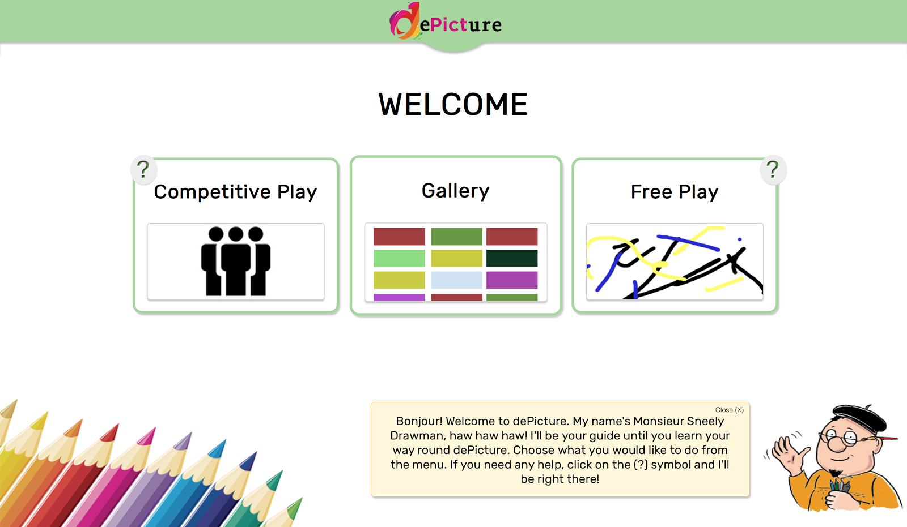DePicture is an application which utilises gamification to collect data for exploratory research purposes. Users can either view the gallery page and see other people’s drawings, or they can participate in the data collection process by either drawing alone or within a specially designed multiplayer game. It utilises the Trove database to pull in random forms of media, and a JavaScript library which enables the functionality of multiple users collaborating within the same application.
Process
First, key functionality of the game would have to be established before any development. We as a team came together and discussed how to make the game engaging and have a clear sense of reward for the user.
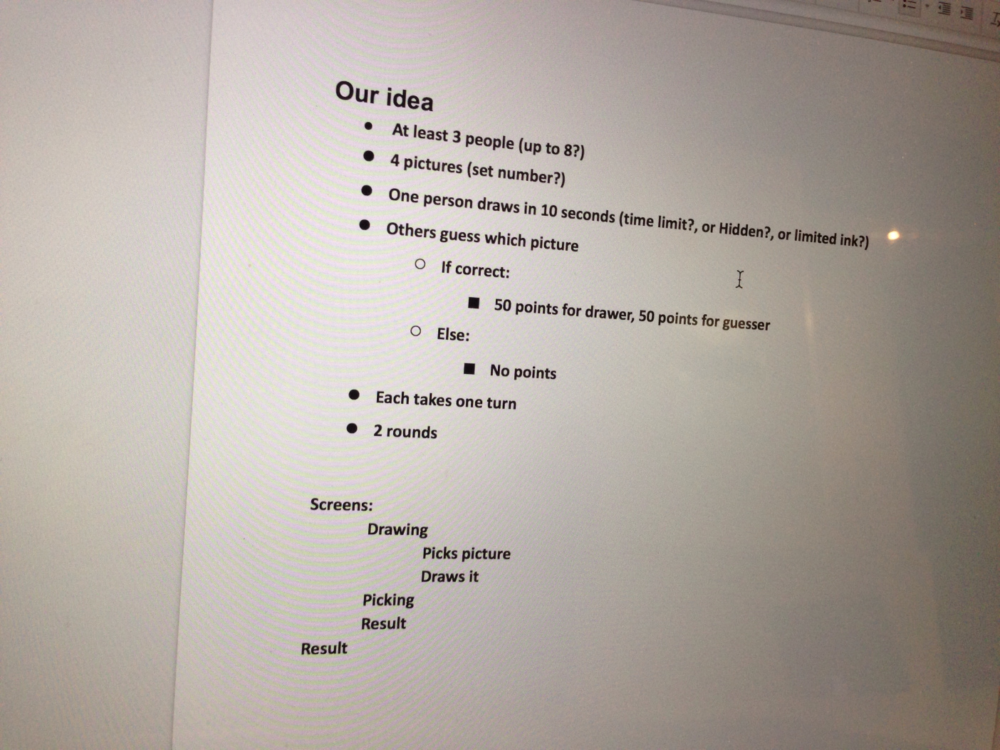Next, I developed a ‘task flow’ diagram and a storyboard to lay out all of the interactions the user would make with the application, as well as the various screen that the user will encounter when using the app. These sketches were done in very low fidelity in order to ensure the ability for quick changes and improvements to the task flow.
 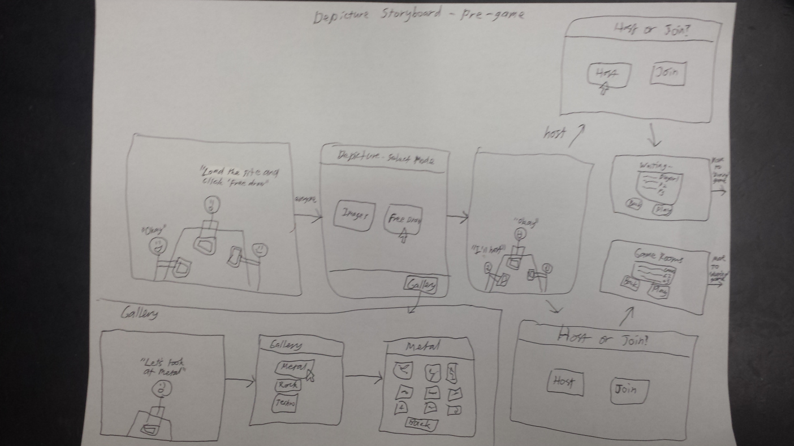
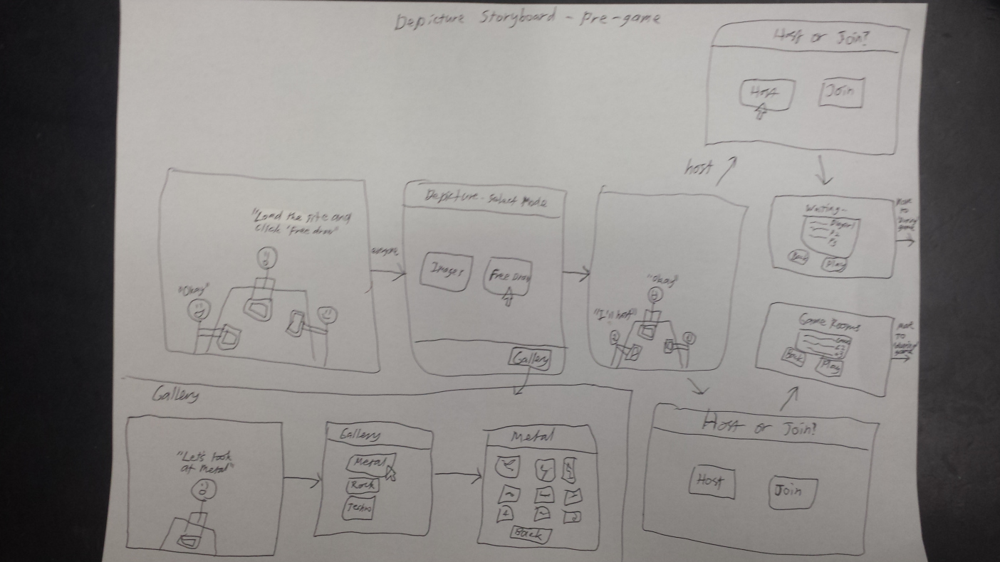
These screens were sketched into Adobe Photoshop and printed out to form the basis for the first usability test.
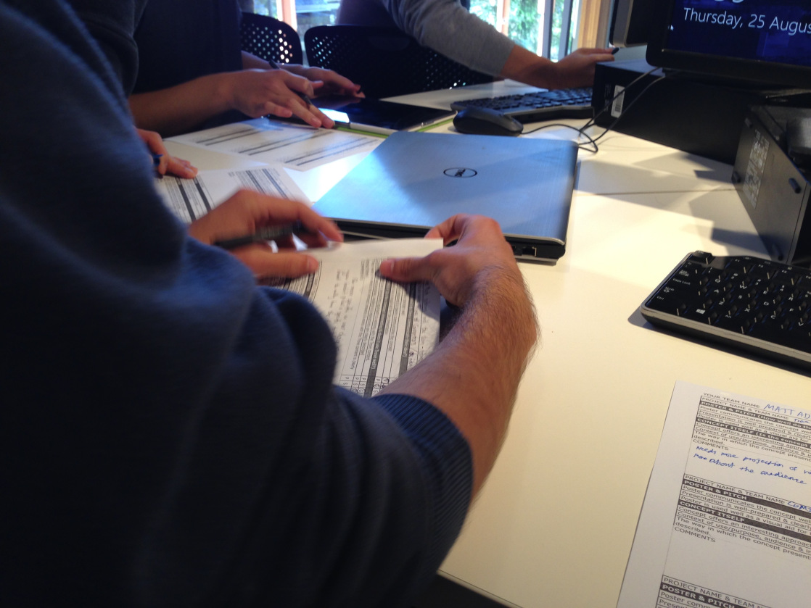Users would interact with every screen using pre-constructed user journeys, such as:
- Drawing an image in the 'free draw' mode.
- Voting on an image in the gallery
- Competing against a friend in competitive play.
Users would follow each user journey while key observations were written down. After the test, users were able to express any thoughts that they had with the application. Users found the application’s purpose to be unclear, and that some screens were not clear on their intended interaction. Work needed to be done to clarify the purpose of the application and the screens.
The use of context-aware hints were proposed to explain each screen as the user navigated through the app. Minor interactions were reviewed to make clear their functionality and propose.
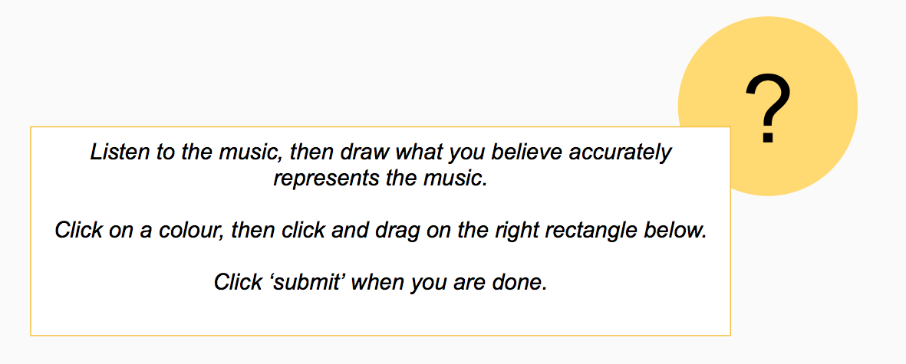A high-fidelity prototype was developed to test the user's response to key interactions and visual elements. Non-essential design elements such as images and help screens were left to a later date in the interest of developing a complete prototype for the usability test.
A usability test was conducted with 5 users to collect feedback on the concept, and key interactions with the application. This was conducted with the same procedure as the paper prototype, in order to provide consistent and comparable feedback to previous iterations.
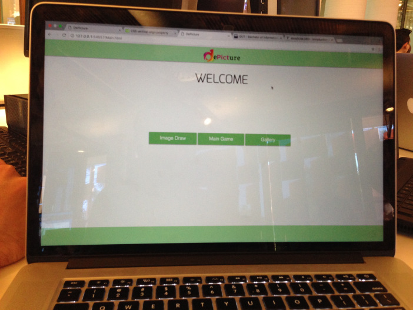 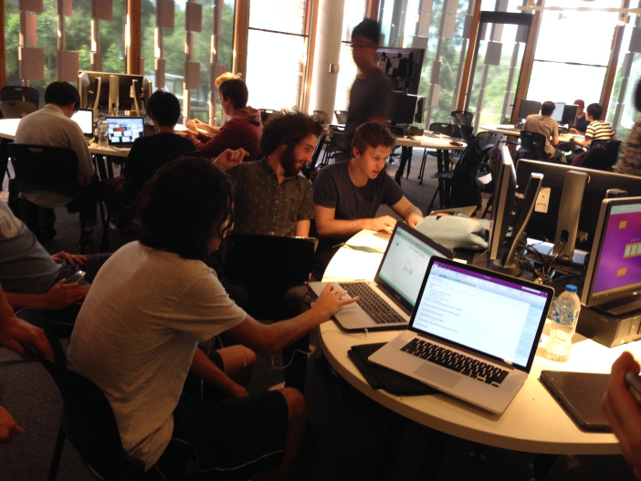 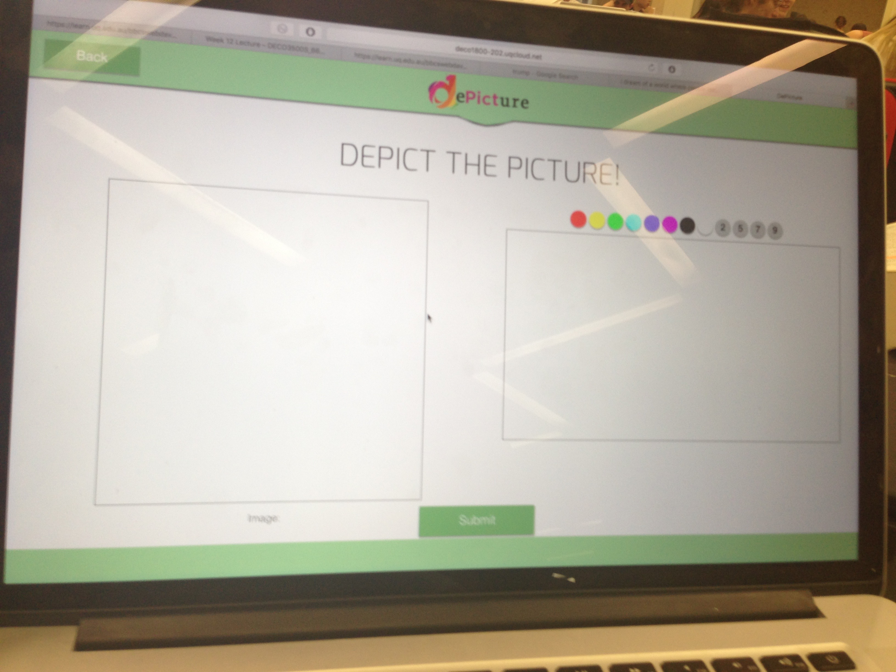Users had very negative impressions of the application. Users still found the purpose of the application unclear. Furthermore, users found guessing the genre of a drawing to be very difficult and unfair. This combination of user feedback led the group to conclude that users were not very enthusiastic about the application's concept, and a drastic change was needed to make the game more enjoyable and appealing.
After the usability tests, a major overhaul of the mechanics of the game were made. The music and images in "Free Draw" were placed into their own game modes "Music Draw" and "Free Draw" respectively. This meant that the drawing prompts were greatly simplified and the media source could be isolated from the other source when doing research analysis.
It was also decided that the focus would be taken away from genres and towards individual media sources. Users would guess the drawings not by genre, but by the original source. They would be prompted with 4 options: the correct answer, and three other randomly generated answers. The gallery page was also merged into one page, as the genre tags were rendered meaningless for the user experience.
The final product was demonstrated to other students and staff members. This would be the chance to market the application and get crucial feedback on how appealing the concept and application are.
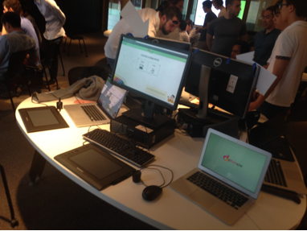 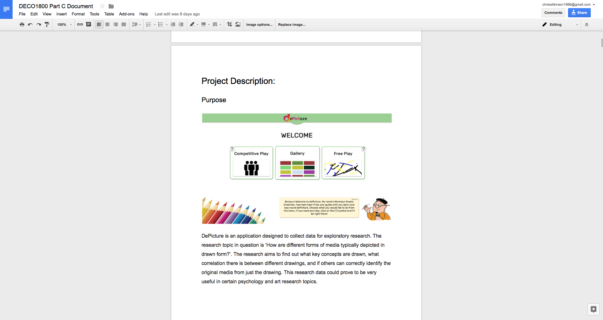Results
Overall, I believe the implementation of the product was a success. After a shaky start, we learned to communicate our design and development ideas. The program was fully implemented with no major issues with the application.
This is what I had learned over the course of the project:
- Early on in the design process, perform some research and investigation to who might use such an application. It is important at the very start to establish assumptions we have made as well as a hypothesis to help establish a goal and to ensure work relevant to the task. This means that the application will be more focused in its purpose and market, and therefore increase adoption rate and success of the final implementation.
- Clearly communicate task roles, and keep a log of tasks. In the project planning phase, group members need to be fully aware of their roles in the project, what tasks they are required to undertake, and what tasks are being done by other group members. The more communication, the less likely there is to be confusion over which tasks are being dealt with and need to be addressed, which impede on overall project progress.
- Leave more time at the end for new issues that might arise. The project plan was made in the assumption that no major issues may arise between then and the final day. There were a few issues that arose in the last 48 hours of the project, meant that the last moments of the development process were stressful, and exhausting. If there are no issues left with the application, then the time will be spent polishing the design and functionality of all the existing features and elements of the project.
 Home
Home